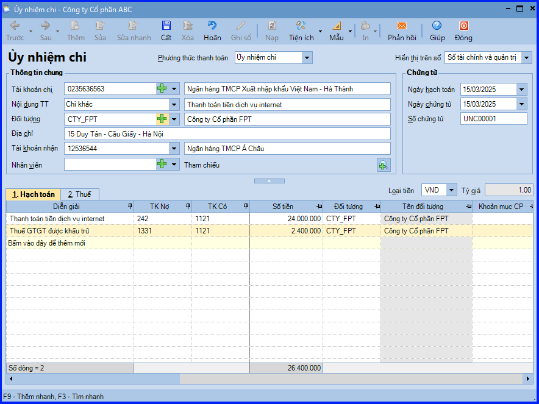
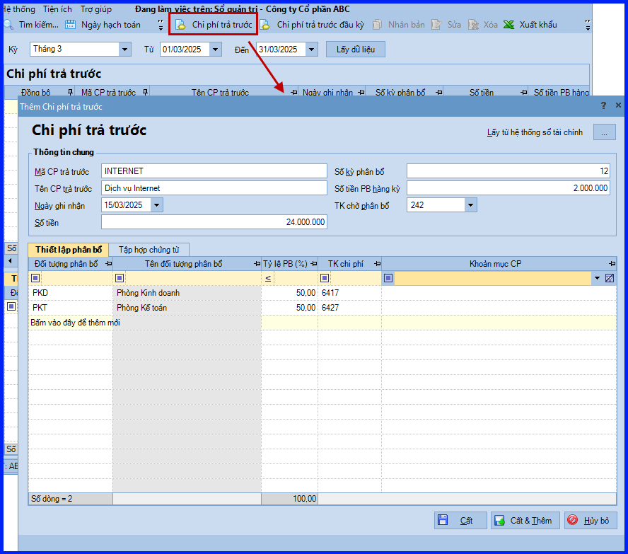
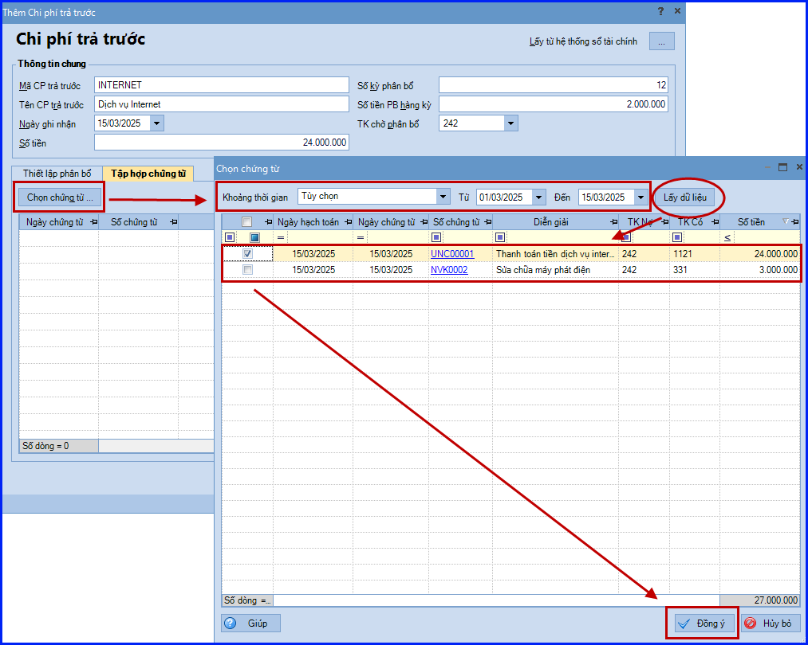
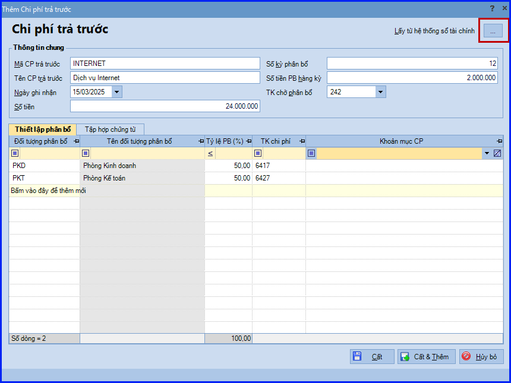
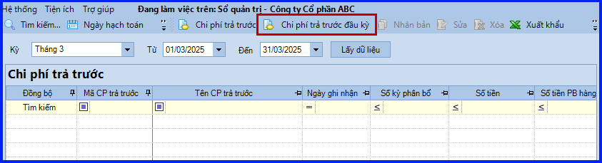
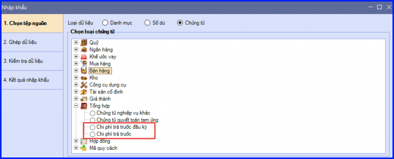
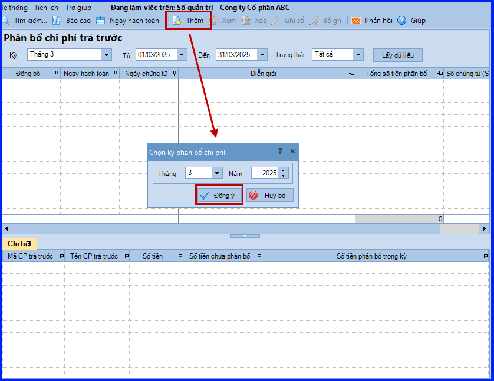
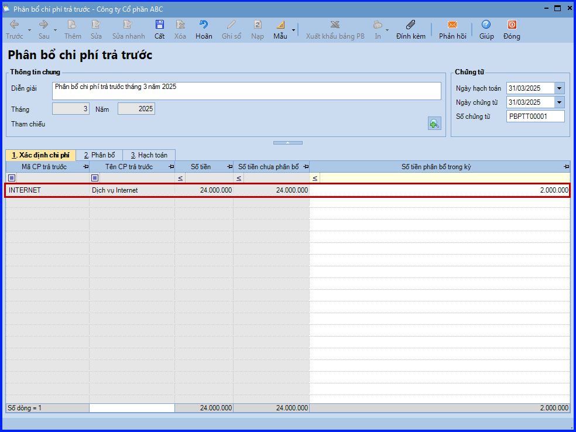
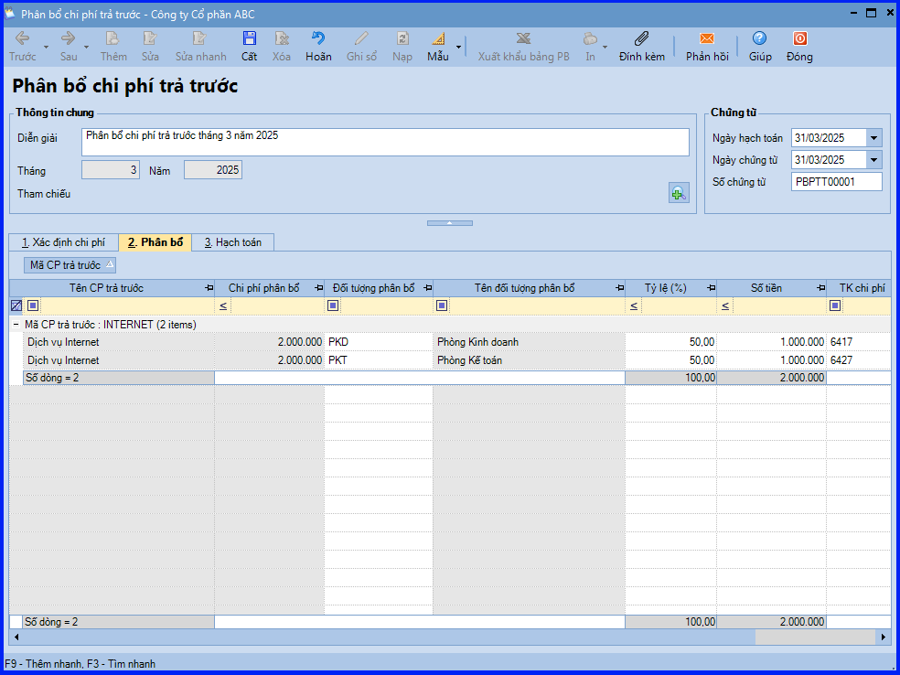
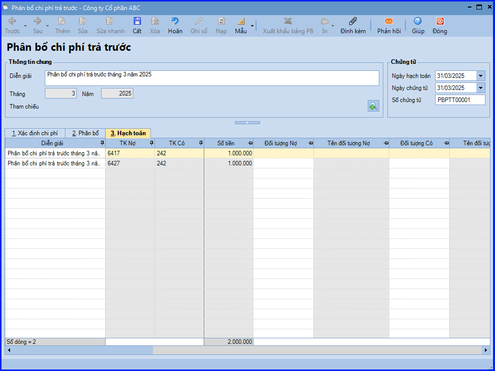

Hướng dẫn hạch toán ghi nhận chi phí trả trước trên phần mềm Misa
Quản lý các chi phí trả trước được phân bổ cho nhiều kỳ, chi phí trả trước là các khoản chi phí thực tế đã phát sinh, nhưng chưa được tính vào chi phí sản xuất, kinh doanh của kỳ phát sinh và cần phải phân bổ để tính vào chi phí của từng kỳ
Khi phát sinh chi phí trả trước đơn vị sẽ tiến hành thực hiện như sau:
- Kế toán tổng hợp sẽ tập hợp các chứng từ gốc liên quan và tiến hàng ghi tăng chi phí trả trước, xác định đối tượng chịu chi phí để theo dõi, quản lý.
- Kế toán hạch toán và in chứng từ chuyển kế toán trưởng ký duyệt.
- Định kỳ kế toán tổng hợp tiến hành phân bổ chi phí trả trước vào chi phí SXKD.
1. Hướng dẫn định khoản ghi nhận chi phí trả trước trên Misa
- Khi phát sinh các khoản chi phí trả trước (thuê văn phòng, thuê TSCĐ…) phải phân bổ dần vào chi phí SXKD của nhiều kỳ
- Nợ TK 242 - Chi phí trả trước
- Nợ TK 133 - Thuế GTGT được khấu trừ (nếu có)
- Có các TK 111, 112, 153, 331, 334, 338,… - Tổng giá thanh toán
- Định kỳ, phân bổ chi phí trả trước
- Nợ các TK 154, 623, 627, 635, 641, 642, 241
- Có TK 242
2. Hướng dẫn thực hiện nghiệp vụ ghi nhận chi phí trả trước trên phần mềm Misa
Việc ghi nhận và phân bổ các khoản chi phí đã trả trước nhưng chưa được tính vào chi phí sản xuất kinh doanh (chi phí thuê VP, chi phí sửa chữa lớn TSCĐ,…) được thực hiện trên phần mềm như sau:
Bước 1: Ghi nhận các khoản chi phí trả trước phát sinh
- Tuỳ thuộc vào hình thức thanh toán, các khoản chi phí này sẽ được ghi nhận trên phân hệ "Quỹ", "Ngân hàng" hoặc "Tổng hợp".
Ví dụ trên phân hệ Ngân hàng.

Bước 2: Khai báo các khoản chi phí cần phân bổ nhiều kỳ
- Vào menu "Nghiệp vụ" => "Tổng hợp" => "Chi phí trả trước" => "Danh sách chi phí trả trước".
- Chọn "Chi phí trả trước".
- Khai báo thông tin về khoản chi phí cần phân bổ.
+ Tại tab "Thiết lập phân bổ": chọn các đối tượng sẽ được phân bổ khoản chi phí trả trước
như đối tượng THCP/công trình/đơn hàng/hợp đồng/đơn vị => Tổng tỷ lệ phân bổ phải bằng 100% và bắt buộc phải nhập TK chi phí để làm căn phân bổ và hạch toán chi phí trong các kỳ.

+ Tại tab "Tập hợp chứng từ": chọn các chứng từ ghi nhận chi phí phát sinh đã được lập ở Bước 1:
- Các bạn ấn "Chọn chứng từ".
- Thiết lập điều kiện để tìm kiếm chứng từ cần tập hợp và ấn "Lấy dữ liệu".
- Tích chọn chứng từ và ấn "Đồng ý".

- Và ấn "Cất".
Chú ý:
- Đối với dữ liệu hạch toán đa chi nhánh và sử dụng cả hai hệ thống sổ (tài chính và quản trị), các khoản chi phí trả trước được khai báo khi đang làm việc tại chi nhánh nào, sổ nào sẽ chỉ được lưu trên chi nhánh đó và sổ đó. Ấn "Lấy từ hệ thống sổ tài chính" (hoặc ngược lại) trong trường hợp muốn lấy thông tin khoản chi phí trả trước từ sổ này sang sổ khác.

- Để khai báo các khoản chi phí phát sinh trước khi sử dụng phần mềm chọn "Chi phí trả trước đầu kỳ" hoặc vào menu "Nghiệp vụ" => "Nhập số dư ban đầu" => chọn tab "Chi phí trả trước".

- Có thể khai báo nhanh chi phí trả trước đầu kỳ, chi phí trả trước bằng cách nhập khẩu excel

Bước 3: Phân bổ các khoản chi phí trả trước
- Vào menu "Nghiệp vụ" => "Tổng hợp" => "Chi phí trả trước" => "Phân bổ chi phí trả trước".
- Các bạn ấn "Thêm".
- Chọn kỳ phân bổ chi phí tương ứng và ấn "Đồng ý".

- Hệ thống tự động lấy các chi phí trả trước cùng số tiền phân bổ trong kỳ:
+ Xác định các khoản chi phí cần phân bổ.

+ Phân bổ chi phí cho các đối tượngđã được thiết lập tại Bước 2.

+ Ghi nhận bút toán hạch toán chi phí.

- Các bạn ấn "Cất".
KẾ TOÁN DIỆU TÂM chúc các bạn làm tốt!
=============================
Nếu bạn muốn thành thạo các kỹ năng làm kế toán trên phần mềm Misa
Thì bạn có thể tham khảo "Khóa Học Thực Hành Kế Toán Trên Phần Mềm Misa" tại Công ty đào tạo Kế Toán Diệu Tâm
Trong khóa học này, bạn sẽ được dạy cách lên sổ sách, lập báo cáo tài chính trên phần mềm Misa
Chi tiết về chương trình đào tạo bạn xem tại đây nhé: Khóa học thực hành kế toán trên Misa
=============================
=============================
Nếu bạn muốn thành thạo các kỹ năng làm kế toán trên phần mềm Misa
Thì bạn có thể tham khảo "Khóa Học Thực Hành Kế Toán Trên Phần Mềm Misa" tại Công ty đào tạo Kế Toán Diệu Tâm
Trong khóa học này, bạn sẽ được dạy cách lên sổ sách, lập báo cáo tài chính trên phần mềm Misa
Chi tiết về chương trình đào tạo bạn xem tại đây nhé: Khóa học thực hành kế toán trên Misa
=============================